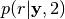
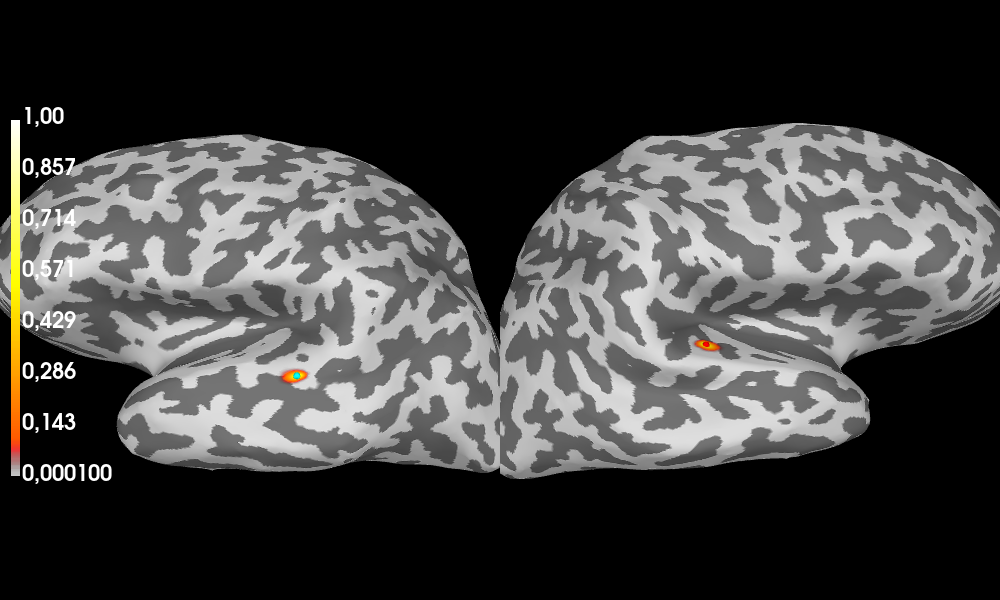
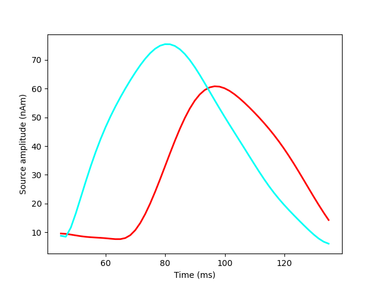

Note
Go to the end to download the full example code or to run this example in your browser via Binder
Compute SESAME inverse solution on evoked data with given source location prior¶
In this example we shall apply SESAME on an evoked dataset, corresponding to the response to an auditory stimulus and we manually select a priori source location probability to reside in a subset of ROIs in a given brain parcellization. Data are taken from the MNE-Python sample dataset.
# Authors: Gianvittorio Luria <luria@dima.unige.it>
# Sara Sommariva <sommariva@dima.unige.it>
# Alberto Sorrentino <sorrentino@dima.unige.it>
#
# License: BSD (3-clause)
# sphinx_gallery_thumbnail_number = 2
from os import path as op
import matplotlib.pyplot as plt
from mne.datasets import sample
from mne import read_forward_solution, pick_types_forward, read_evokeds
from sesameeg.utils import prior_loc_from_labels
from sesameeg.mne import prepare_sesame
data_path = sample.data_path()
subject = 'sample'
subjects_dir = op.join(data_path, 'subjects')
fname_fwd = op.join(data_path, 'MEG', subject,
'sample_audvis-meg-eeg-oct-6-fwd.fif')
fname_evoked = op.join(data_path, 'MEG', subject, 'sample_audvis-ave.fif')
Load the forward solution and the evoked data . The forward solution also defines the employed brain discretization.
meg_sensor_type = True # All MEG sensors will be included
eeg_sensor_type = False
# Forward solution
fwd = read_forward_solution(fname_fwd, exclude='bads')
fwd = pick_types_forward(fwd, meg=meg_sensor_type,
eeg=eeg_sensor_type, ref_meg=False)
# Evoked Data
condition = 'Left Auditory'
evoked = read_evokeds(fname_evoked, condition=condition, baseline=(None, 0))
evoked = evoked.pick('meg', exclude='bads')
Reading forward solution from /home/pasca/mne_data/MNE-sample-data/MEG/sample/sample_audvis-meg-eeg-oct-6-fwd.fif...
Reading a source space...
Computing patch statistics...
Patch information added...
Distance information added...
[done]
Reading a source space...
Computing patch statistics...
Patch information added...
Distance information added...
[done]
2 source spaces read
Desired named matrix (kind = 3523) not available
Read MEG forward solution (7498 sources, 306 channels, free orientations)
Desired named matrix (kind = 3523) not available
Read EEG forward solution (7498 sources, 60 channels, free orientations)
Forward solutions combined: MEG, EEG
Source spaces transformed to the forward solution coordinate frame
364 out of 366 channels remain after picking
305 out of 364 channels remain after picking
Reading /home/pasca/mne_data/MNE-sample-data/MEG/sample/sample_audvis-ave.fif ...
Read a total of 4 projection items:
PCA-v1 (1 x 102) active
PCA-v2 (1 x 102) active
PCA-v3 (1 x 102) active
Average EEG reference (1 x 60) active
Found the data of interest:
t = -199.80 ... 499.49 ms (Left Auditory)
0 CTF compensation matrices available
nave = 55 - aspect type = 100
Projections have already been applied. Setting proj attribute to True.
Applying baseline correction (mode: mean)
Removing projector <Projection | Average EEG reference, active : True, n_channels : 60>
Define the parameters.
time_min, time_max = 0.045, 0.135 # Select N100m
subsample = None
sample_min, sample_max = evoked.time_as_index([time_min, time_max],
use_rounding=True)
# To accelerate the run time of this example, we use a small number of
# particles. We recall that the parameter ``n_parts`` represents, roughly speaking,
# the number of candidate solutions that are tested in the Monte Carlo procedure;
# larger values yield in principle more accurate reconstructions but also entail a
# higher computational cost. Setting the value to about a hundred seems to represent
# a good trade–off.
n_parts = 10
# If None, noise_std and dip_mom_std will be estimated by SESAME.
noise_std = None
dip_mom_std = None
noise_cov = None
# You can make SESAME pre-whiten the data by providing a noise covariance
# from mne import read_cov
# fname_cov = op.join(sample.data_path(), 'MEG', subject,
# 'sample_audvis-cov.fif')
# noise_cov = read_cov(fname_cov)
A priori select some ROIs
prior_rois = prior_loc_from_labels(subject, subjects_dir, fwd, 'aparc',
['middletemporal-lh', 'middletemporal-rh',
'superiortemporal-lh', 'superiortemporal-rh'])
Reading labels from parcellation...
read 34 labels from /home/pasca/mne_data/MNE-sample-data/subjects/sample/label/lh.aparc.annot
read 34 labels from /home/pasca/mne_data/MNE-sample-data/subjects/sample/label/rh.aparc.annot
Visualize the selected data.
fig = evoked.plot(show=False)
for ax in fig.get_axes()[:2]:
ax.axvline(time_min, color='r', linewidth=2.0)
ax.axvline(time_max, color='r', linewidth=2.0)
plt.show()

Apply SESAME.
_sesame = prepare_sesame(fwd, evoked, n_parts=n_parts, noise_std=noise_std,
top_min=time_min, top_max=time_max, dip_mom_std=dip_mom_std,
hyper_q=True, noise_cov=noise_cov, subsample=subsample,
prior_locs=prior_rois, subject=subject, subjects_dir=subjects_dir)
_sesame.apply_sesame()
# Compute goodness of fit
gof = _sesame.goodness_of_fit()
print(' Goodness of fit with the recorded data: {0}%'.format(round(gof, 4) * 100))
# Compute source dispersion
sd = _sesame.source_dispersion()
print(' Source Dispersion: {0} mm'.format(round(sd, 2)))
Computing inverse operator with 305 channels.
305 out of 305 channels remain after picking
Forward model with free source orientation.
Computing neighbours matrix [done]
Computing neighbours probabilities...[done]
Analyzing data from 0.045 s to 0.1349 s
Sampling user defined prior probability distribution for dipole locations.
Estimating dipole moment std...[done]
Estimated dipole moment std: 3.2335e-08
Sampling hyperprior for dipole moment std.
Estimating noise std...[done]
Estimated noise std: 3.9983e-12
Computing inverse solution. This will take a while...
Estimated dipole strength variance: 3.0464189766905766e-08
Estimated number of sources: 2
Estimated source locations:
* source 1: [-0.05817005 0.00491732 0.05770831]
* source 2: [0.04589902 0.00942308 0.06544629]
[done in 43 iterations]
Goodness of fit with the recorded data: 69.92%
Source Dispersion: 0.47 mm
Visualize the posterior map of the dipoles’ location  and the estimated sources on the inflated brain.
Surface stc computed.
Visualize the amplitude of the estimated sources as function of time.
Save results.
# You can save SESAME result in an HDF5 file with:
# _sesame.save_h5(save_fname, sbj=subject, data_path=fname_evoked, fwd_path=fname_fwd)
# You can save SESAME result in a Pickle file with:
# _sesame.save_pkl(save_fname, sbj=subject, data_path=fname_evoked, fwd_path=fname_fwd)
Total running time of the script: (0 minutes 9.838 seconds)